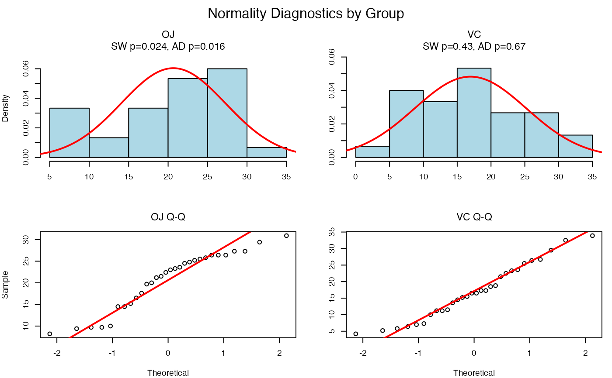
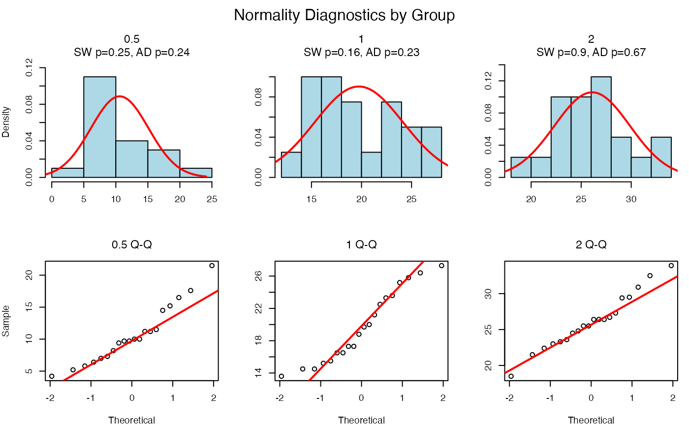

Visualisation of the normality assumption for Welch ANOVA/t-test
Source:R/vis_group_normality.R
vis_group_normality.Rdvis_group_normality checks for normality of each group separately using
the Shapiro-Wilk and Anderson-Darling tests. The null hypothesis is that
each group is normally distributed. The function generates histograms
with normal distribution overlays and Q-Q plots to visually assess normality.
The layout is always 2 rows × k columns (histograms on top, Q-Q plots on bottom).
Usage
vis_group_normality(
samples,
groups,
conf.level = 0.95,
samplename = "",
groupname = "",
cex = 1
)Arguments
- samples
Numeric vector; the dependent variable.
- groups
Factor or vector; the grouping variable (2 to 8 groups for visual display).
- conf.level
Numeric; confidence level (default: 0.95). Used to determine alpha = 1 - conf.level for normality test interpretation.
- samplename
Character; label for the y-axis (default: "").
- groupname
Character; label for the x-axis (default: "").
- cex
Numeric; scaling factor for plot text and symbols (default: 1).
Value
A list containing:
- shapiro_tests
List of Shapiro-Wilk test results for each group
- ad_tests
List of Anderson-Darling test results for each group
- n_groups
Number of groups
- group_names
Names of the groups
Details
Layout is always 2 rows × k columns:
Top row: Histograms with normal overlay for each group
Bottom row: Q-Q plots for each group
For more than 8 groups, a tabular summary is provided instead of plots.
Examples
# Two groups (like t-test)
vis_group_normality(ToothGrowth$len, ToothGrowth$supp)

# Three groups
ToothGrowth$dose <- as.factor(ToothGrowth$dose)
vis_group_normality(ToothGrowth$len, ToothGrowth$dose)
